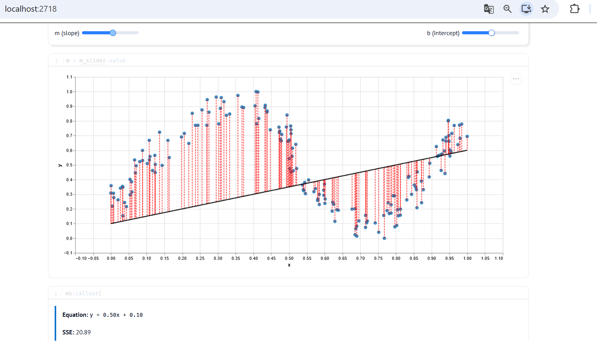
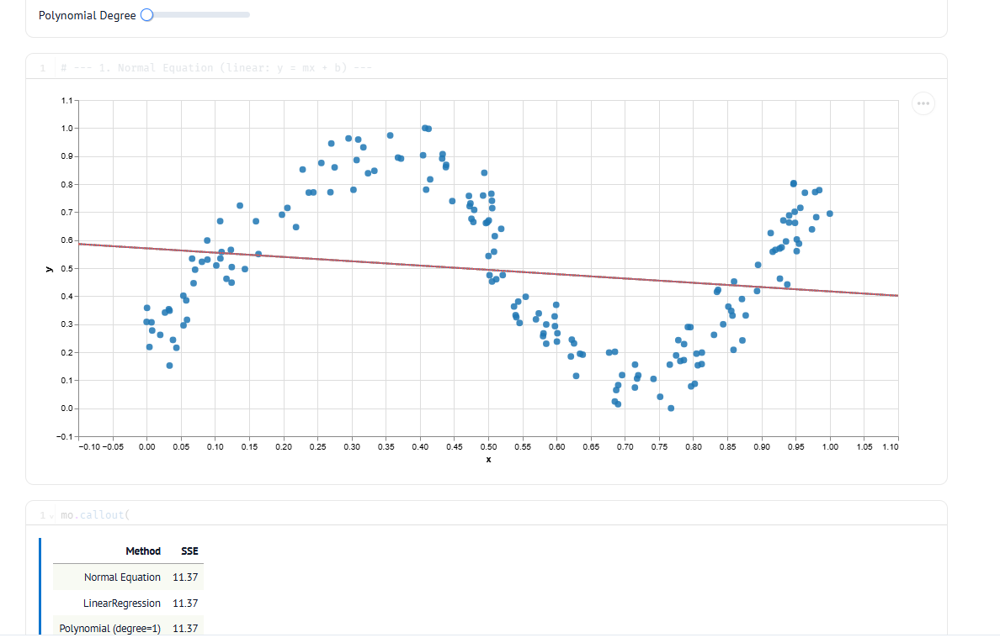
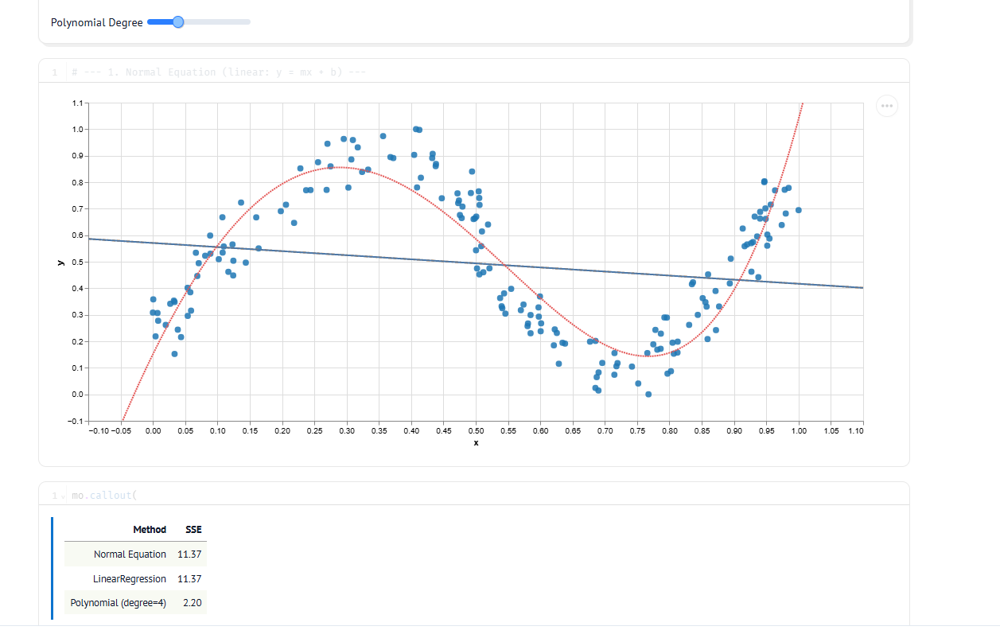
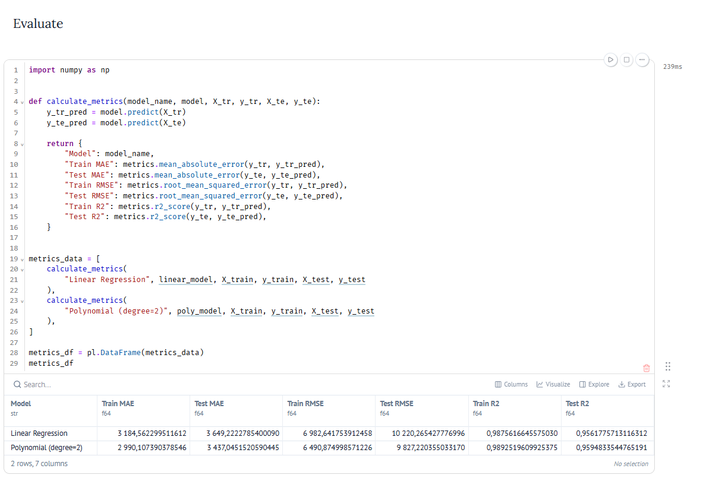
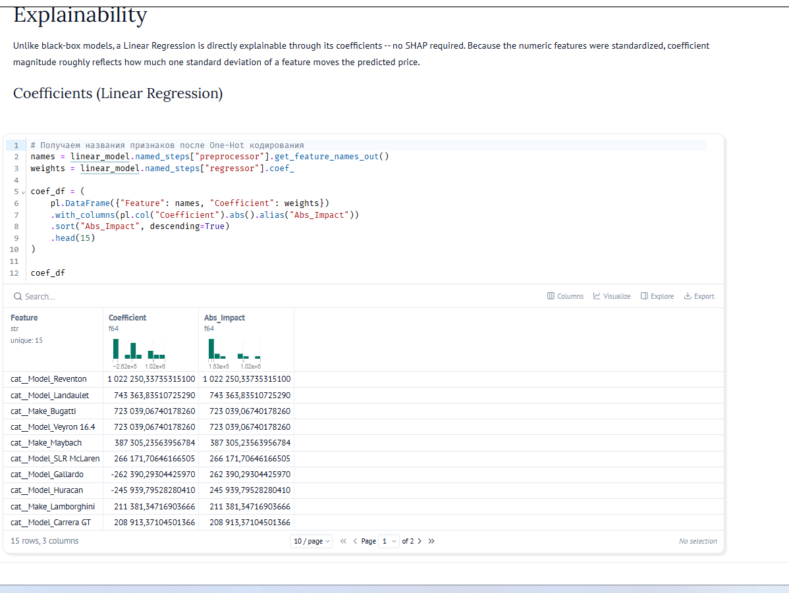

Viikko 43: Lineaarinen regressio ja normaaliyhtälö
1. Johdanto ja viikon tavoitteet
Tällä viikolla tutustuin lineaariseen regressioon. Toisin kuin aiemmin luokittelussa tai klusteroinnissa, regressiossa tavoitteena on ennustaa jatkuvaa numeroarvoa.
Viikon tärkeimmät asiat olivat: - Ymmärtää suoran sovittaminen datapisteisiin yhtälöllä y = mx + b. - Katsoa jäännöstermejä (residuaalit) sekä pienimmän neliösumman kriteeriä (SSE, Ordinary Least Squares). - Kokeilla normaaliyhtälöä w = inv(X^T * X) * X^T * y, jolla parhaat kertoimet saadaan suoraan matriisilaskulla ilman iteratiivista optimointia. - Pohtia normaaliyhtälön ongelmia: multikollineaarisuus vaikeuttaa matriisin kääntämistä ja iso piirremäärä tekee laskennasta hidasta. - Testata ali- ja ylisovittumista muuttamalla polynomin astelukua.
2. Tehtävä: Pienimmän neliösumman menetelmä (Marimo)
Tein tehtävän interaktiivisessa Marimo-muistiossa (600_least_squares_problem.py). Tein aluksi drawdata-työkalulla aaltomaisen pisteparven, jossa oli selkeää epälineaarisuutta. Sen jälkeen sovitin siihen erilaisia malleja.
2.1 Manuaalinen suoran sovittaminen
Ensimmäisessä vaiheessa yritin sovittaa suoraa käsin. Säädin kulmakerrointa m ja vakiotermiä b.

Kuten kuvaajasta näkyy, valitsemillani arvoilla (m = 0.50, b = 0.10) neliösumma (SSE) oli 20.89. Suora viiva ei mitenkään sovi aaltomaiseen dataan. Residuaalit eli punaiset katkoviivat jäävät vielä todella pitkiksi.
2.2 Analyyttinen ratkaisu ja asteen 1 regressio
Seuraavaksi laskin parhaan suoran suoraan normaaliyhtälöllä ja kokeilin myös Scikit-Learnin valmista LinearRegression-mallia.

Molemmat tavat antoivat täysin saman tuloksen: - Normal Equation SSE: 11.37 - LinearRegression SSE: 11.37 - Polynomial (degree=1) SSE: 11.37
Vaikka analyyttinen kaava löytää parhaan mahdollisen suoran ja virhe puolittuu, malli kärsii selvästi alisovittumisesta (underfitting). Suora viiva on liian yksinkertainen tällaiselle kaarevalle datalle.
2.3 Polynomiregression sovittaminen (degree = 4)
Korjasin alisovittumisen lisäämällä malliin joustavuutta. Kasvatin polynomin astelukua neljään asti (degree=4).

Kun asteen arvoksi laitettiin 4, mallin virhe pieneni huomattavasti: - Polynomial (degree=4) SSE: 2.20
Neljännen asteen polynomi seuraa datan aaltomaista muotoa tosi siististi. Se ei myöskään tartu liikaa satunnaiseen kohinaan. Jos asteen nostaisi liian korkeaksi (esimerkiksi asteille 8–12), tulisi vastaan ylisovittuminen (overfitting). Silloin käyrä tekisi jyrkkiä mutkia ja yrittäisi osua jokaiseen pisteeseen.
3. Havainnot ja itsearviointi
- Analyyttinen vs. iteratiivinen: Normaaliyhtälö antaa heti tarkan vastauksen pienelle datalle. Huono puoli on kuitenkin matriisin kääntämisen raskaus (aikavaativuus kasvaa jyrkästi piirteiden määrän mukaan) ja se, että liikaa toisistaan riippuvat piirteet estävät matriisin kääntämisen.
- Residuaalit: Neliösumma rankaisee isoista heitoista todella paljon enemmän kuin pienistä virheistä. Siksi malli yrittää välttää kaukana olevia pisteitä.
- Monimutkaisuuden säätö: Polynomin asteen kasvattaminen laskee aina opetusdatan virhettä. Ilman validointia liian iso aste kuitenkin johtaa ylisovittumiseen ja huonoon ennustekykyyn uudella datalla
Tehtävä: Auton hintaennustimen suorituskyky
Tässä tehtävässä (610_car_price.py) ennustin autojen hintoja (MSRP). Käytin piirteinä sekä numeerisia että kategorisia tietoja.
Esikäsittely ja mallit
Rakensin esikäsittelyn Pipeline- ja ColumnTransformer-työkaluilla:
- Numeeriset piirteet: Paikkasin puuttuvat arvot mediaanilla ja skaalasin arvot (
StandardScaler). - Kategoriset piirteet: Käsittelin puuttuvat tiedot ja muutin sarakkeet numeroiksi One-Hot-koodauksella (
OneHotEncoder).
Koulutin kaksi eri mallia: tavallisen lineaarisen regression (LinearRegression) sekä toisen asteen polynomimallin (degree=2), jossa toisen asteen termit tehtiin vain numeerisille piirteille.
Tulokset ja mittarit
Testasin mallien toimintaa testidatalla ja laskin virheet (MAE, RMSE, R²):

- Lineaarinen malli: Test MAE ≈ 3 649 $, RMSE ≈ 10 220 $, R² = 0.956
- Polynomimalli (aste 2): Test MAE ≈ 3 437 $, RMSE ≈ 9 827 $, R² = 0.959
Polynomiset piirteet paransivat tulosta hieman. Virheet pienenivät ja R² nousi, eikä malli lähtenyt ylisovittumaan. RMSE-luku on molemmilla melko korkea. Se johtuu siitä, että datassa on mukana todella kalliita ääripään autoja, joista neliöllinen virhe rankaisee kovaa.
Tärkeimmät piirteet (Kertoimet)

Eniten hintaa nostavat harvinaiset luksus- ja urheiluautot (kuten Reventon, Landaulet ja Bugatti Veyron). Näiden mallien kertoimet tuovat perushintaan heti satoja tuhansia tai jopa yli miljoonan dollarin lisän.